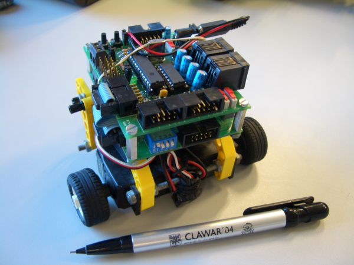

Next: 6 ¿Por qué hardware Up: Hardware Libre: la Tarjeta Previous: 4 Software


Next: 6 ¿Por
qué hardware Up: Hardware
Libre: la Tarjeta Previous: 4
Software
|
 |
Figura: El microbot Skytritt, que utiliza la tarjeta Skypic como ``cerebro''
La Skypic es una tarjeta de propósito general, muy útil en la construcción de prototipos. Una de las aplicaciones para la que fue creada es la construcción de microbots, pequeños robots que la incorporan como ``cerebro'', como por ejemplo el robot seguidor de línea Skytritt (figura ), una variante del robot abierto Tritt[13].
Los servomecanismos del tipo Futaba 3003 o compatibles se conectan directamente, lo que es muy útil para el diseño y prueba de robots articulados. El programa star-servo8[14], para Linux, permite controlar hasta 8 servos desde el PC, pudiendo generar secuencias de movimiento para los robots articulados.
Otro ámbito de aplicación es el docente. Se puede utilizar en laboratorios de arquitectura de computadores, sistemas digitales o robótica. Los alumnos no sólo se limitarían a usar la placa (libertad 0), sino que también la pueden estudiar (libertad 1) o modificar (libertad 2) para adaptarla a sus propios diseños. También se puede tomar de ejemplo para aprender a diseñar placas industriales, obteniendo la información sobre su tecnología de fabricación: anchura de las pistas, diámetro de los pads, planos de masa, serigrafías, etc.
Sin embargo, la mayor utilidad está en el diseño de prototipos. Al ser hardware libre, no es necesario ``reinventar la rueda'', diseñando el sistema desde cero. Es mejor opción partir de algo que ya funciona y adaptarlo a tus necesidades, ahorrando tiempo y reduciendo costes.
Esto es lo que se ha hecho en el proyecto Chronojump[15], en el que se está diseñando un sistema software y hardware para la medición de los tiempos de vuelo de diferentes saltos realizados por deportistas, para conocer su estado de forma, la eficacia de un entrenamiento, la evolución del deportista, etc. Para la creación del prototipo hardware se está empleando una Skypic, que más adelante se modificará para adaptarla a las necesidades concretas del proyecto. Si no fuese hardware libre las dos únicas opciones que se tendrían serían: 1) diseñar el hardware desde cero, 2) Adaptar el proyecto al hardware existente en el mercado.


Next: 6 ¿Por
qué hardware Up: Hardware
Libre: la Tarjeta Previous: 4
Software